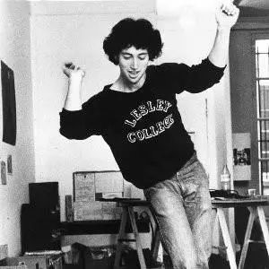

Copyright © 黑Miss胶
互联网ICP备案:苏ICP备2021007984号-1
one two three four five six
roadrunner,roadrunner
1951年出生的Jonathan Richman在波士顿的郊区长大,并在高中的时候迷上了地下丝绒。 据说他是用当时另外一支先锋乐队The fugs的首张专辑来向自己的同学换来了安迪的大香蕉。 他是如此的醉心于地下丝绒和安迪沃霍尔的艺术,恨不得马上奔向纽约。
终于,在1969年的波士顿茶会俱乐部,Jonathan第一次见到了安迪。尽管当时他只有16岁,但安迪还是和他友好的进行了一场谈话。
之后,安迪邀请Jonathan来参观他的“工厂”。Jonathan没有乘坐电梯,而是慢慢的走着楼梯上了阁楼空间。安迪问他为什么,他回答说“我想要锻炼。”
再之后安迪每次遇到Jonathan都会笑着问他“怎么样,你还在爬楼梯锻炼身体吗?”
高中毕业后,Jonathan马上奔向了纽约,想要实现他的音乐梦。在地下丝绒的经纪人Steve Sesnick的家的沙发上睡了几周后,他发现唱片公司对他并不感冒。最终在跟着地下丝绒去了一趟欧洲后,他又回到了家乡波士顿。
欧洲之旅
Jonathan对生他养他的波士顿有着很深的情感,从歌曲“The Fenway”,"New England"中可见一斑。而波士顿也没有让他再次失望,他在这成功的组建起了The Modern Lovers。 今天看来,这支乐队算得上是全明星阵容:
Jonathan Richman——Vocal and guitarist
Jerry Harrison——keyboardist(后来加入了Talking heads)
David Robinson——drummer(后来加入了The Cars)
Ernie Brooks——bassist(哈佛毕业,和galaxie 500一样)(他学诗歌) (有趣的是galaxie 500后来也翻唱了modern lovers 的 don’t let our youth go to waste)
Jonathan的歌词总是很真诚,而且他唱的也很真挚。
在这首"I’m Straight"中乐队的第一任吉他手John Felice (Jonathan的童年好友) 成了他口中的Hippie Johnny,并且直言想要挖墙脚。
虽然身边的朋友大多都有毒瘾,但是Jonathan对毒品并不感兴趣。这里有一个很有意思的小故事。Ernie的一个朋友曾经拿了一包大麻给Jonathan,Jonathan对他说“我要狠狠的揍你一顿,因为只有这样才能证明我嗨了。”
在“She Cracked”这首歌中,Jonathan就描述了一位深陷毒瘾中的少女 我想相比于“Herion”和“I wanna be your dog”来说,Jonathan更好的代表了当时的普通人对毒品的态度。
Jonathan也唱了许多关于女孩的歌,专辑里的歌曲” Astral Plane“、 “Dignified and Old“、”Hospital“、”Girlfriend“等都是在诉说敏感的青春期男孩对爱情的追求。
到了1972年,乐队通过巡演在波士顿已经小有名气。这也为他们吸引来了John Cale的目光,Cale帮助他们签约了华纳兄弟,并且答应作为制作人为他们录制第一张专辑《The Modern Lovers》。
这段时间也是乐队最春风得意的时候。
但是一些改变在慢慢发生…
这一切大概起源于乐队去百慕大进行的一场巡演。关于这场巡演,Jonathan创作了“Down to Bermuda”这首歌。 当时乐队常驻在洛杉矶,70年代的洛杉矶可并不太平
“洛杉矶绵延的枪声,百慕大鲜艳的花朵。”
从百慕大回来后,Jonathan对乐队的其他成员说他不想再做吵闹的音乐了,他说:”如果音乐太吵,我就不要了。会伤到孩子们的耳朵,你知道吗?如果它是真情的,人们会听到它,即使它很安静,如果它有魔力的话。“
当我第一次接触到The Modern Lovers的时候,感到很困惑——为什么他们的两张专辑的风格会有这么大的差异?我想,可能百慕大之旅就是原因。
对于乐队的其它成员来说,这与他们的初衷完全相违。他们不能理解为什么Jonathan会有这样的想法。
制作人Cale也很生气,在录制”Someone I Care About“的时候,他对Jonathan说”你必须听起来很刻薄,你得让人觉得你想要杀人!“Jonathan对他说 ”我不想伤害任何人——我只想做一张好听的,听起来很快乐的唱片“
Jonathan对音乐的新的领悟显然与Modern Lovers早期的音乐风格相左,乐队的录制进程也举步维艰。Cale对Jonathan的这种转变感到不解,他不停的问Jonathan“Why do you want to change the sound?”
华纳兄弟也为这张专辑缓慢的录制进度所着急,华纳兄弟公司的一个负责人打电话给Jonathan,Jonathan说: “我们会为唱片录制这些歌曲,但我们不会在现场演奏这些歌曲。“这自然引起了唱片公司极大的不满。”
这时Jonathan写了很多充满了童真童趣的歌曲,有时是小飞机,有时是小恐龙,等待着ice cream man,歌颂着夏天与清晨。
这张唱片很好的体现了Jonathan的转变,同时也可以看到modern lovers的原班人马只剩下了Jonathan
Jonathan对乐队里的其他成员说”我不想再唱"Roadrunner"了(就像radiohead不想唱creep一样)
华纳兄弟终于对乐队失去了耐心,乐队也宣布解散。
他们的同名专辑直到1976年才最终发行。
至此,The Modern Lovers 的故事也算告了一段落。
Jonathan对音乐的转变导致了the Modern Lovers的陨落。可正是从这陨灭中Jonathan Richman获得了新生。 他的音乐生涯正如这首歌中所说的那样,才刚刚绽放而已。
Copyright © 黑Miss胶
互联网ICP备案:苏ICP备2021007984号-1